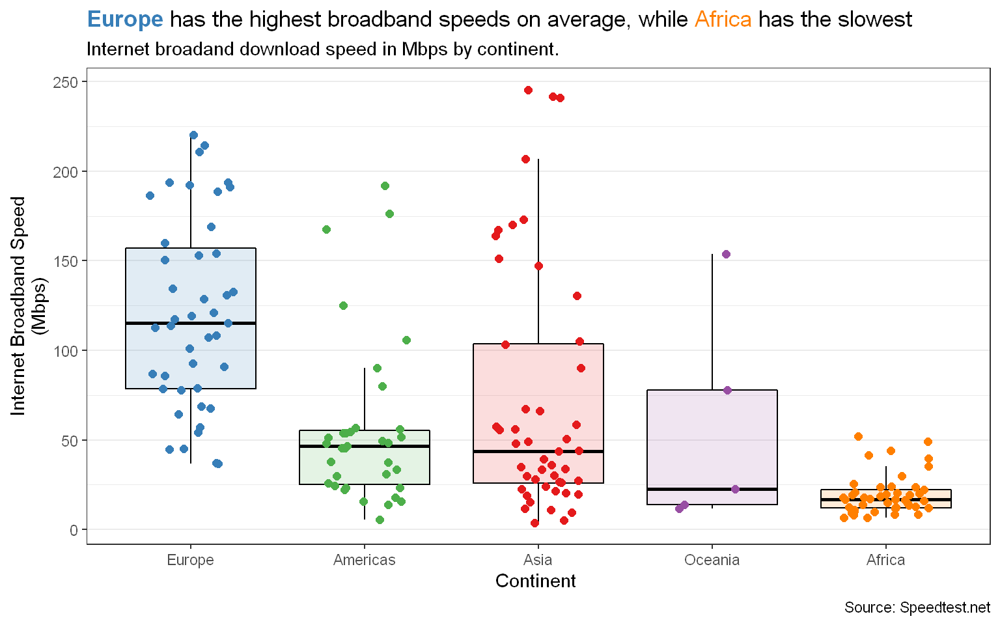
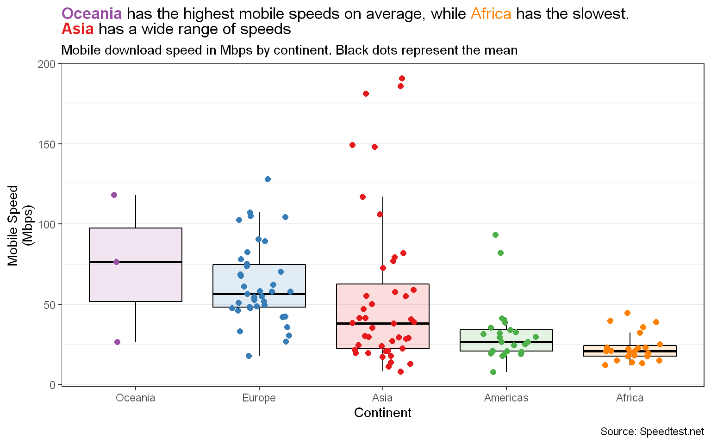
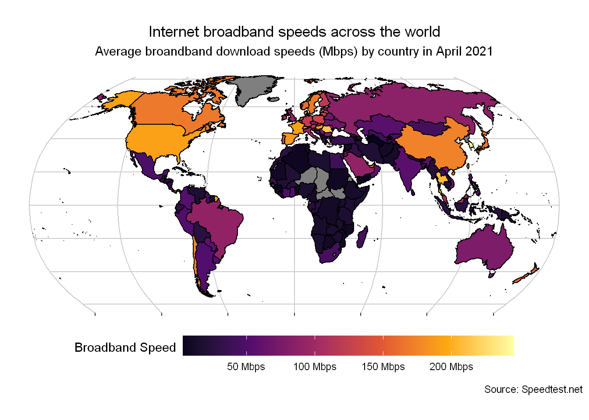
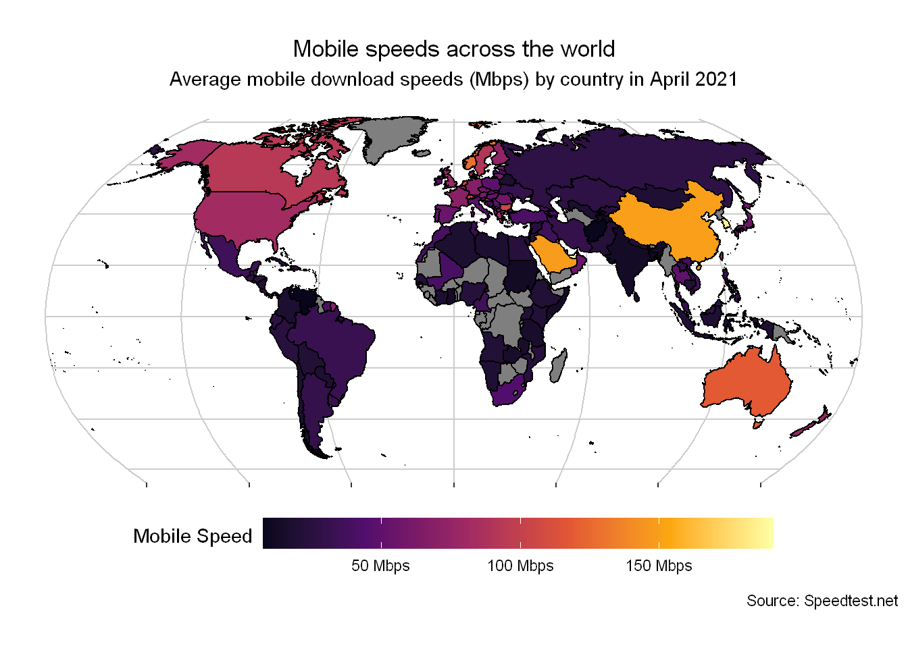
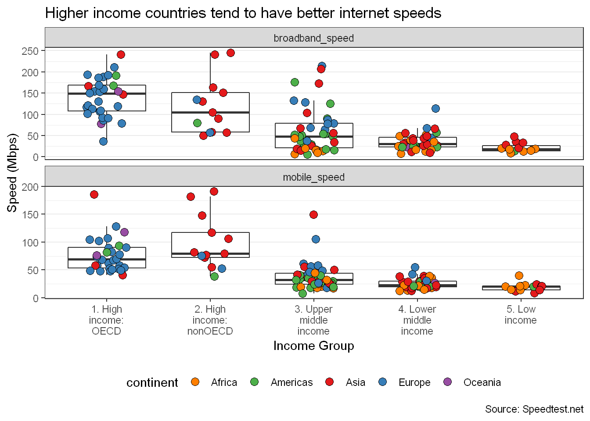

Today we will look at the worldwide internet speeds and mobile speeds by country, in particular we will explore the download speeds. We will obtain the data by webscraping the site Speedtest.net and use their data from the Global Index.
The Speedtest Global Index uses the information gathered from the website’s speed tests from across the world and aggregates them together to obtain a countries average speed by month. To learn more see here.
The data obtain will look at internet speeds for April 2021.
# Load Libraries
library(tidyverse)
library(ggtext)
library(rvest) # For webscraping
library(plotly)
## These next few are for plotting world maps
library(sf)
library(rnaturalearth)
library(rnaturalearthdata)
library(rgeos)url <- "https://www.speedtest.net/global-index"
tables <- read_html(url) %>%
html_table()
mobile <- tables[[1]] %>%
na.omit() %>%
select("mobile rank"=1,3,"mobile speed"=4)
broadband <- tables[[2]] %>%
na.omit() %>%
select("broadband rank"=1,3,"broadband speed"=4)Here are the two tables from the site
glimpse(mobile) ## Rows: 134
## Columns: 3
## $ `mobile rank` <int> 1, 2, 3, 4, 5, 6, 7, 8, 9, 10, 11, 12, 13, 14, 15, 16, ~
## $ Country <chr> "United Arab Emirates", "South Korea", "Qatar", "China"~
## $ `mobile speed` <dbl> 190.87, 186.06, 181.43, 149.40, 148.29, 128.04, 118.24,~glimpse(broadband)## Rows: 176
## Columns: 3
## $ `broadband rank` <int> 1, 2, 3, 4, 5, 6, 7, 8, 9, 10, 11, 12, 13, 14, 15, 1~
## $ Country <chr> "Singapore", "South Korea", "Hong Kong (SAR)", "Mona~
## $ `broadband speed` <dbl> 245.50, 241.58, 240.83, 220.35, 214.33, 210.71, 206.~Note that we have more countries in our broadband data than we do our mobile data - 176 vs 134 countries respectively.
Now we will join the full tables by doing a full join and then we will do some cleaning for the country names. This will be helpful later when we need to join the data
internet_speeds <- broadband %>%
full_join(mobile,by="Country") %>%
select(2,3,1,5,4) %>%
janitor::clean_names() %>%
mutate(country = case_when( country == "Hong Kong (SAR)" ~ "Hong Kong SAR China",
country == "Côte d'Ivoire" ~"Côte d’Ivoire",
country == "Congo" ~ "Congo - Brazzaville",
country == "DR Congo" ~ "Congo - Kinshasa",
country == "Republic of the Union of Myanmar" ~ "Myanmar",
country == "Saint Kitts and Nevis" ~ "St. Kitts & Nevis",
country == "Saint Lucia" ~ "St. Lucia",
country == "Antigua & Barbuda" ~ "St. Vincent & Grenadines",
country == "Saint Vincent and the Grenadines" ~ "St. Vincent & Grenadines",
country == "Antigua and Barbuda" ~ "Antigua & Barbuda",
country == "Bosnia and Herzegovina" ~ "Bosnia & Herzegovina",
country == "Swaziland" ~ "Eswatini",
country == "Saint Vincent and the Grenadines" ~ "St. Vincent & Grenadines",
country == "The Bahamas" ~ "Bahamas",
country == "The Gambia" ~ "Gambia",
country == "Trinidad and Tobago" ~ "Trinidad & Tobago",
TRUE ~ country),
)This is the resulting data
glimpse(internet_speeds)## Rows: 177
## Columns: 5
## $ country <chr> "Singapore", "South Korea", "Hong Kong SAR China", "Mo~
## $ broadband_speed <dbl> 245.50, 241.58, 240.83, 220.35, 214.33, 210.71, 206.81~
## $ broadband_rank <int> 1, 2, 3, 4, 5, 6, 7, 8, 9, 10, 11, 12, 13, 14, 15, 16,~
## $ mobile_speed <dbl> 79.25, 186.06, 76.98, NA, 57.83, 89.50, 50.04, 52.62, ~
## $ mobile_rank <int> 20, 2, 22, NA, 34, 16, 46, 43, NA, 27, 18, NA, 12, 41,~To make use of knowing which continent and region a country is from, we can use a library called countrycode, which contains useful data such as various country codes and their regions, this is helpful when used to join data to other sources.
countries_list <- countrycode::codelist_panel %>%
filter(year==2020) %>%
select(country.name.en,continent,region,region23,iso3c) %>%
# unique() %>%
mutate( country.name.en = str_replace(country.name.en, " \\s*\\([^\\)]+\\)", "")) # This removes brackets in the title e.g. Myanmar (Bhurma) -> MyanmarNow we join countries_list to internet_speeds and fill in any NAs in the data
internet_speeds <- left_join(internet_speeds,countries_list,by=c("country"="country.name.en"))# %>%
# mutate( na_counts = rowSums(is.na(.)) ) #remove this
# Fill in NAs
internet_speeds[internet_speeds$country=="Kosovo","continent"] <- "Europe"
internet_speeds[internet_speeds$country=="Kosovo","region23"] <- "Southern Europe"
internet_speeds[internet_speeds$country=="Macau (SAR)","continent"] <- "Asia"
internet_speeds[internet_speeds$country=="Macau (SAR)","region"] <- "East Asia & Pacific"
internet_speeds[internet_speeds$country=="Macau (SAR)","region23"] <- "Eastern Asia"
internet_speeds[internet_speeds$country=="Palestine","continent"] <- "Asia"
internet_speeds[internet_speeds$country=="Palestine","region"] <- "Middle East & North Africa"
internet_speeds[internet_speeds$country=="Palestine","region23"] <- "Western Asia"
internet_speeds[internet_speeds$country=="Western Sahara","continent"] <- "Africa"
internet_speeds[internet_speeds$country=="Western Sahara","region"] <- "Middle East & North Africa"
internet_speeds[internet_speeds$country=="Western Sahara","region23"] <- "Northern Africa"These is for plotting colours by continent
# Colour code by continent for plots
countries <- internet_speeds %>% pull("continent") %>% unique()
col_codes <- RColorBrewer::brewer.pal(n= countries %>% length(),"Set1")
names(col_codes) <- countries
# Color code by region
regions <- internet_speeds %>% pull("region") %>% unique()
region_codes <- RColorBrewer::brewer.pal(n= regions %>% length(),"Dark2")
names(region_codes) <- regions
region23_names <- c(
# Africa
"Eastern Africa", "Middle Africa","Northern Africa","Southern Africa", "Western Africa",
# Americas #4DAF4A
"Caribbean","Central America","South America","Northern America",
# Asia #E41A1C
"Central Asia","Eastern Asia","South-Eastern Asia","Southern Asia","Western Asia",
# Europe #377EB8
"Eastern Europe","Northern Europe","Southern Europe","Western Europe",
# Oceania #984EA3
"Australia and New Zealand","Melanesia","Micronesia")
region23_cols <- c("#FFA500", "#FF8C00", "#EE9A00", "#FFB90F", "#FF7F00", "#548B54", "#3CB371", "#2E8B57", "#32CD32", "#EE2C2C", "#CD2626", "#B22222", "#EE0000", "#FF3030", "#4682B4", "#3A5FCD", "#1874CD", "#4F94CD", "#8B4789", "#8B668B", "#9932CC")
names(region23_cols) <- region23_namesNow we can begin looking at the data and drawing insights.
plot_by_region <- function(var,region_level){
p <- internet_speeds %>%
select(country,{{region_level}},{{var}}) %>%
na.omit() %>%
mutate( temp_region_level = fct_reorder({{region_level}},-{{var}},.fun = median) ) %>%
ggplot(aes(x=temp_region_level ,y={{var}},col=temp_region_level ))+
geom_boxplot(aes(fill=temp_region_level ), col="black",alpha=0.15,outlier.shape = NA)+
geom_jitter(height = 0,width = 0.25,size=2)
return(p)
}
plot_by_region(broadband_speed,continent) +
scale_color_manual(values = col_codes)+
scale_fill_manual(values = col_codes)+
theme_bw()+
theme(legend.position = "none",
panel.grid.major.x = element_blank(),
plot.title = element_markdown())+
labs(title="<span style='color:#377EB8'>**Europe**</span> has the highest broadband speeds on average, while <span style = 'color:#FF7F00'>Africa</span> has the slowest",
subtitle="Internet broadand download speed in Mbps by continent.",
x="Continent ",y="Internet Broadband Speed\n(Mbps)",
caption="Source: Speedtest.net")
From this graph we see that on average (using the median), Europe has the best internet broadband speeds (115.3 Mpbs), followed by Americas (46.5 Mbps), Asia (43.8 Mbps), Oceania (22.8 MPs), and Africa (16.9 Mbps).
plot_by_region(mobile_speed,continent) +
scale_color_manual(values = col_codes)+
scale_fill_manual(values = col_codes)+
theme_bw()+
theme(legend.position = "none",
panel.grid.major.x = element_blank(),
plot.title = element_markdown())+
labs(title="<span style='color:#984EA3'>**Oceania**</span> has the highest mobile speeds on average, while <span style = 'color:#FF7F00'>Africa</span> has the slowest.<br><span style='color:#E41A1C'>**Asia**</span> has a wide range of speeds",
subtitle="Mobile download speed in Mbps by continent. Black dots represent the mean",
x="Continent",y="Mobile Speed\n(Mbps)",
caption="Source: Speedtest.net")
From this we see that Oceania has the highest mobile speeds (median of 76.5 Mpbs), followed by Europe (56.5 Mpbs), Asia (38.1 Mbps), Americas (26.6 Mbps), and Africa (20.9 Mbps).
Looking at the continents, there are quiet broad variations, so it could be helpful to view the speeds through another layer of granularity. This time we can break up the continents group into a sub-region within each continent.
p <- internet_speeds %>%
select(country,continent,region23,broadband_speed) %>%
na.omit() %>%
mutate( region23 = fct_reorder(region23,-broadband_speed,.fun = median),) %>%
ggplot()+
geom_hline( data = internet_speeds %>% group_by(continent) %>% summarise(avg_speed = median(broadband_speed,na.rm=TRUE),.groups="drop" ),
mapping=aes(yintercept=avg_speed,group=continent),lty=2,size=1.5)+
geom_hline( yintercept = median(internet_speeds$broadband_speed,na.rm = TRUE),lty=3 )+
geom_jitter( aes(x=region23,y=broadband_speed,fill=region23,
text=paste0("Country: ",country,
"\nBroadband Speed: ",broadband_speed," Mbps",
"\nRegion: ",region23,
"\nContinent:",continent) ),
height = 0,width = 0.2,size=3,col="black")+
scale_fill_manual(values = region23_cols)+
facet_grid(.~factor(continent,levels=c("Europe","Americas","Asia","Oceania","Africa")),scales = "free_x")+
theme_bw()+
theme(legend.position = "none",
panel.grid.major.x = element_blank(),
axis.text.x = element_text(size=7))+
scale_x_discrete(labels = function(x) str_wrap(x, width = 10))+
labs(title="Internet broadand download speed in Mbps by continent and region",
x="Region",y="Internet Broadband Speed\n(Mbps)")
ggplotly(p,tooltip = "text")The long dashed lines show the global median for internet speed, while the large and short dashed line represents the continental median. We see that there some big differences between regions within each continent. For example in Asia, the countries in Eastern Asia massively outperform those in Southern Asia. Countries like Singapore, South Korea, and Hong Kong (SAR of China) are at the top.
p <- internet_speeds %>%
select(country,continent,region23,mobile_speed) %>%
na.omit() %>%
mutate( region23 = fct_reorder(region23,-mobile_speed,.fun = median) ) %>%
ggplot()+
geom_hline( data = internet_speeds %>% group_by(continent) %>% summarise(avg_speed = median(mobile_speed,na.rm=TRUE),.groups="drop" ),
mapping=aes(yintercept=avg_speed,group=continent),lty=2,size=1.5)+
geom_hline( yintercept = median(internet_speeds$mobile_speed,na.rm = TRUE),lty=3 )+
geom_jitter( aes(x=region23,y=mobile_speed,fill=region23,
text=paste0("Country: ",country,
"\nBroadband Speed: ",mobile_speed," Mbps",
"\nRegion: ",region23,
"\nContinent:",continent) ),
height = 0,width = 0.2,size=3,col="black")+
scale_fill_manual(values = region23_cols)+
facet_grid(.~factor(continent,levels=c("Oceania","Europe","Asia","Americas","Africa")),scales = "free_x")+
theme_bw()+
theme(legend.position = "none",
panel.grid.major.x = element_blank(),
axis.text.x = element_text(size=7))+
scale_x_discrete(labels = function(x) str_wrap(x, width = 10))+
labs(title="Mobile download speed in Mbps by continent and region",
x="Region",y="Mobile Speed\n(Mbps)")
ggplotly(p,tooltip = "text")Again we see differences between regions within a continent. Despite being only the third best continent in terms of average mobile speed, Asian countries, particularly those in the Eastern and Western Asian regions have some of the best mobile speeds in the world.
We can also show the results on a world map.
# Create world data
world <- ne_countries(scale = "medium", returnclass = "sf")
plot_data <- world %>%
filter(name !="Antarctica") %>%
select(name,iso_a3,economy,income_grp) %>%
left_join(internet_speeds,by=c("iso_a3"="iso3c"))
ggplot(data = plot_data) +
geom_sf(aes(fill=broadband_speed),col="black")+
scale_fill_viridis_c(option="B",begin=0.05, labels = scales::number_format(suffix=" Mbps") )+
coord_sf(crs = "+proj=robin",)+
labs(title="Internet broadband speeds across the world",
subtitle="Average broandband download speeds (Mbps) by country in April 2021",
caption="Source: Speedtest.net",
fill="Broadband Speed\n")+
theme(
legend.position = "bottom",
legend.key.width = unit(2,'cm'),
axis.text.x = element_blank(),
panel.background = element_blank(),
panel.grid = element_line(colour="grey80"),
plot.title = element_text(hjust = 0.5),
plot.subtitle = element_text(hjust=0.5)
)
We see that Countries in Northern America, Europe and East Asia have the best internet speeds in the world. Africa appears to have some of the worst.
ggplot(data = plot_data) +
geom_sf(aes(fill=mobile_speed),col="black")+
scale_fill_viridis_c(option="B",begin=0.05, labels = scales::number_format(suffix=" Mbps") )+
coord_sf(crs = "+proj=robin",)+
labs(title="Mobile speeds across the world",
subtitle="Average mobile download speeds (Mbps) by country in April 2021",
caption="Source: Speedtest.net",
fill="Mobile Speed\n")+
theme(
legend.position = "bottom",
legend.key.width = unit(2,'cm'),
axis.text.x = element_blank(),
panel.background = element_blank(),
panel.grid = element_line(colour="grey80"),
plot.title = element_text(hjust = 0.5),
plot.subtitle = element_text(hjust=0.5)
)
From this chart it appears that countries like Saudi Arabia and China have the highest internet speeds. Much of the world is still lagging behind when it comes to internet speeds.
p <- internet_speeds %>%
select(country,broadband_speed,mobile_speed,continent,region23) %>%
na.omit() %>%
ggplot(aes(x=broadband_speed,y=mobile_speed,fill=continent,
text=paste0("Country: ",country,
"\nBroadband Speed: ",broadband_speed," Mbps",
"\nMobile Speed: ",mobile_speed," Mbps",
"\nContinent: ",continent,
"\nRegion: ",region23)))+
geom_abline(slope = 1,lty=2)+
geom_point(size=3)+
scale_fill_manual(values=col_codes)+
labs(title="Broadband Speed vs Mobile Speed",
x="Broadband Speed",y="Mobile Speed",fill="Continent")
ggplotly(p,tooltip = "text")The dashed line shows the line where the countries have an equal download speed for broadband and mobile. Countries above the line have a better mobile speed than a broadband, while for those below the line, they have better broadband speeds than they do for mobile. We see that vast majority of countries have a better broadband speed than mobile speed, in fact 89 countries in our dataset have a better broadband than mobile speed, while the opposite is true for 44 countries.
We can also say that the internet speed for broadband and mobile is dependant on the income level
plot_data %>%
select(country,broadband_speed,mobile_speed,income_grp,continent) %>%
na.omit() %>%
filter(!country %in% c("Macau (SAR)","Kosovo") ) %>%
pivot_longer(cols=c(broadband_speed,mobile_speed)) %>%
ggplot(aes(x=income_grp,y=value))+
geom_boxplot(outlier.shape = NA)+
geom_jitter(aes(fill=continent),pch=21,size=3,height = 0,width=0.2)+
facet_wrap(.~name,ncol=1,scales="free_y")+
scale_fill_manual(values=col_codes)+
scale_x_discrete(labels = function(x) str_wrap(x, width = 10))+
labs(title = "Higher income countries tend to have better internet speeds",
caption="Source: Speedtest.net",
x="Income Group",y="Speed (Mbps)")+
theme_bw()+
theme(panel.grid.major.x = element_blank(),
legend.position = "bottom")
Countries with higher levels of income have better speeds for their devices than those from low income groups.
We see that many countries in Asia and Europe have better broadband and mobile speeds than other countries in other continents
There is some regional differences between speeds within the continents.
Countries with higher incomes tend to have higher internet speeds